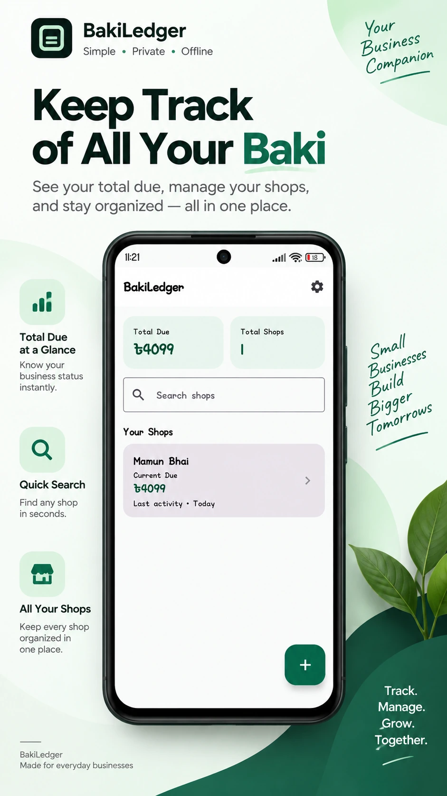
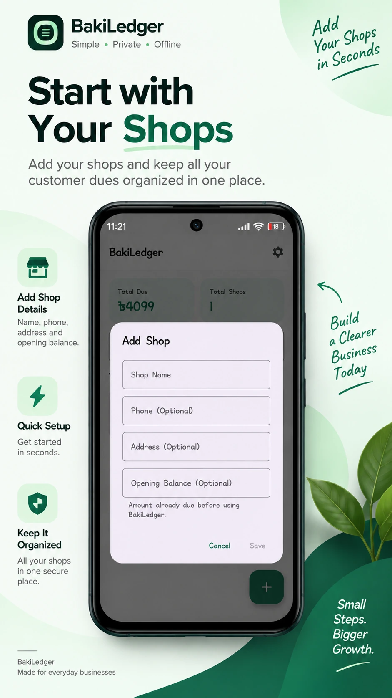
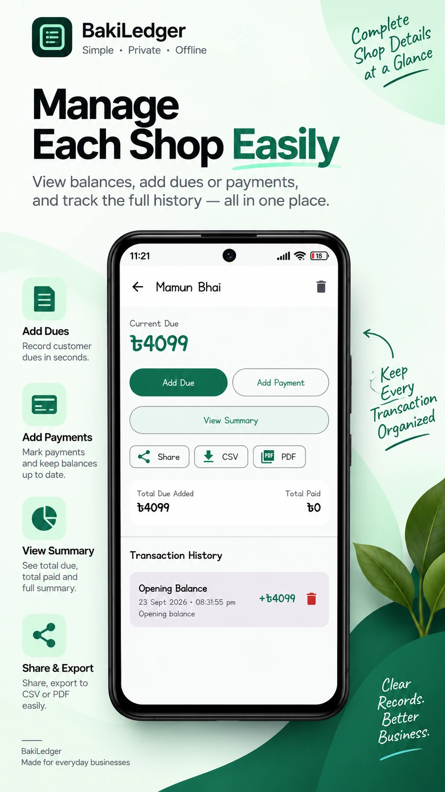
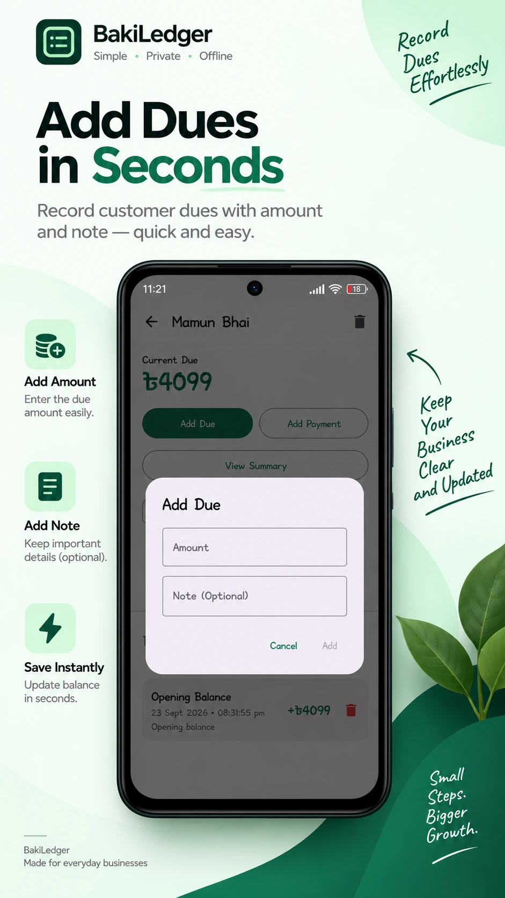
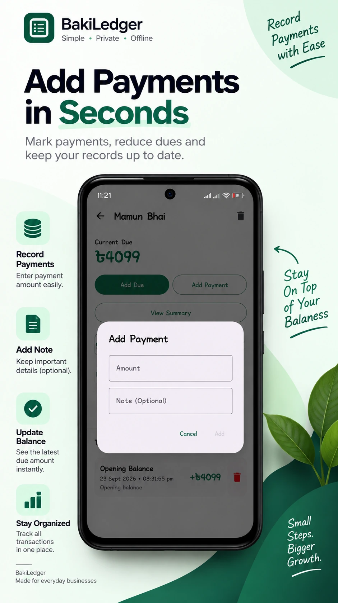
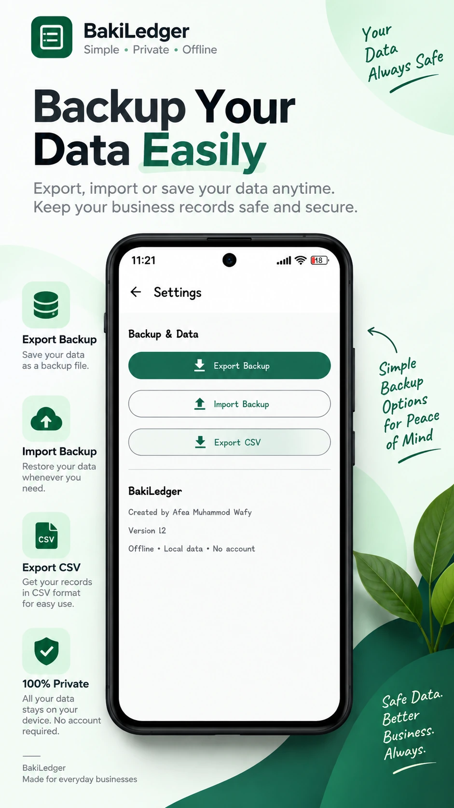

Screenshots
See BakiLedger in action.
Six professionally designed views showing the simple personal workflow for managing baki, shops, payments and offline backups.






Simple by design
Your Baki. Your Records. Your Control.
BakiLedger is built for personal use: quick due and payment tracking, separate shop records, and local backup without requiring an account or an online connection.